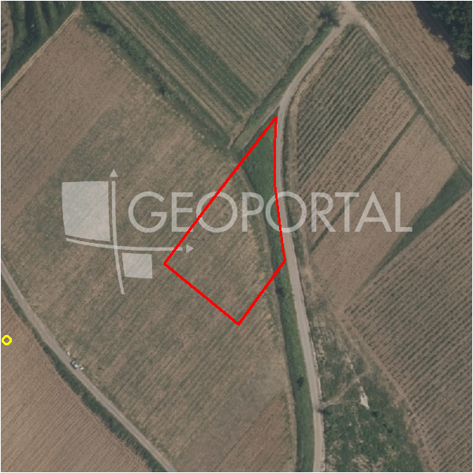

#6859 · PODSLJEME - BAČUN - Građevinsko zemljište 1.998 m2 - s pogledom!
Bačun, Podsljeme, Grad Zagreb · zemljiste · njuskalo · status active · oglas ↗
Ocjena
- Score
- 57 rule 57 · LLM – · 12.09.2026.
- RLV
- 396.000 € (184 €/m²) · ratio 4,36
- Ukupna investicija
- 2,74 M€
- GBP
- 1.295 m²
- Feedback
- –
- CRM
- –
Oglas
- Cijena
- 91.000 € (46 €/m²)
- Površina
- 1.998 m² · DKP 2.159 m² (odstupanje 8,1 %)
- Prodavatelj
- agencija · GOLDEN NEKRETNINE
- Prvi put
- 11.09.2026. · zadnje 11.09.2026. · 0 d na tržištu
Povijest cijene
| Datum | Cijena |
|---|---|
| 11.09.2026. | 91.000 € |
Flagovi
zona_provjeriti zona iz geokodiranja — provjeriti (−5)zone_uncertainty zona nije pregledana (reviewed: false) (−5)
llm_pending LLM ekstrakcija/ocjena nedostupna
Komponente score-a
| rlv | {'gbp': 1295.34, 'kis': 0.6, 'nkp': 1062.1788, 'noi': None, 'rlv': 396490.0574086957, 'ratio': 4.357033597897755, 'value': None, 'phases': 1, 'profile': 'zagreb_visestambeno', 'gdv_neto': 3653895.0719999997, 'cost_soft': 85492.44, 'gdv_bruto': 4567368.84, 'kis_known': False, 'total_inv': 2740248.94, 'cost_build': 2137311.0, 'cost_other': 420985.5, 'cost_sales': 137021.06519999998, 'demolition': False, 'gbp_source': 'kis', 'rlv_per_m2': 183.6537391304348, 'parcel_area': 2158.9, 'parcelation': False, 'roi_on_cost': 0.28341405609666975, 'profit_at_ask': 776625.0667999998, 'cost_demolition': 0.0, 'total_inv_phase': 2740248.94, 'parcel_area_effective': 2158.9, 'sale_price_per_m2_nkp': 4300.0} |
| hard | [] |
| info | ['llm_pending'] |
| rubric | {'permits': {'max': 5.0, 'detail': {'permit': 'none'}, 'points': 0.0}, 'location': {'max': 15.0, 'detail': {'source': 'benchmark:seed:Podsljeme', 'sale_price_per_m2_nkp': 4300.0}, 'points': 5.62}, 'physical': {'max': 4.0, 'detail': {'slope_pct': 21.02, 'road_access': 'yes', 'slope_points': 0.796}, 'points': 2.8}, 'liquidity': {'max': 3.0, 'detail': {'n_cuts': 0, 'points_cut': 0.0, 'points_days': 0.008333333333333333, 'seller_type': 'agencija', 'points_fresh': 0.5, 'price_cut_pct': None, 'days_on_market': 1, 'points_private': 0}, 'points': 0.51}, 'rlv_ratio': {'max': 25.0, 'detail': {'rlv': 396490, 'ratio': 4.357, 'asking_price': 91000.0}, 'points': 25.0}, 'ticket_fit': {'max': 10.0, 'detail': {'asking_price': 91000.0}, 'points': 3.21}, 'zone_quality': {'max': 8.0, 'detail': {'source': 'gis', 'zone_class': 'ostalo', 'gp_uredjeni': True}, 'points': 2.0}, 'profit_potential': {'max': 20.0, 'detail': {'roi_on_cost': 0.283, 'profit_at_ask': 776625}, 'points': 18.21}, 'price_vs_benchmark': {'max': 10.0, 'detail': {'source': 'auto:Podsljeme', 'deviation': 0.715, 'ask_eur_m2': 46, 'benchmark_eur_m2': 160.0}, 'points': 10.0}} |
| weights | {'llm': 0.4, 'rule': 0.6, 'model': 0.0} |
| penalties | {'zona_provjeriti': 5, 'zone_uncertainty': 5} |
| raw_score | 67,3 |
| rlv_notes | [] |
| flag_notes | {'max_gbp': 1295, 'total_inv': 2740249, 'zone_code': 'Z', 'zone_class': 'ostalo', 'zone_source': 'gis', 'zone_reviewed': False, 'gis_unconfirmed': 'izvan_gp'} |
| caps_applied | [] |
GIS
- Čestica
- k.o. 335355, k.č. 478 (pin_buffer, 0,76); k.o. 335355, k.č. 459 (pin_buffer, 0,62); k.o. 335355, k.č. 479 (pin_buffer, 0,41)
- Zona
- Z (ostalo) · NIJE pregledana
- kig / kis / katnost
- – / – / –
- GP / UPU
- uredjeni · UPU –
- Pristup / nagib
- yes · 21,0 % (max 28,6 %)
- More
- –
- Zaštite
- Natura ne · zaštićeno ne · kulturno dobro ne
- Zgrade na čestici
- 0 %
- Match
- 0,76
Karta
Ortofoto (DOF)

RLV kalkulacija — pretpostavke
| gbp | {'value': 1295.34, 'source': 'kis'} |
| kis | {'value': 0.6, 'source': 'default_profila'} |
| soft_pct | {'value': 0.04, 'source': 'profil'} |
| nkp_ratio | {'value': 0.82, 'source': 'profil'} |
| cost_other | {'value': 420985.5, 'source': 'profil: doprinosi+uređenje po m² GBP, financiranje+rezerva % gradnje'} |
| parcel_area | {'value': 2158.9, 'source': 'dkp'} |
| asking_price | {'value': 91000.0, 'source': 'oglas'} |
| margin_on_cost | {'value': 0.15, 'source': 'profil'} |
| build_cost_per_m2_gbp | {'value': 1650.0, 'source': 'profil'} |
| sale_price_per_m2_nkp | {'value': 4300.0, 'source': 'benchmark:seed:Podsljeme'} |
| transfer_tax_and_acquisition | {'value': 0.06, 'source': 'profil'} |
Ekstrakcija iz oglasa
| utilities | ['struja', 'voda', 'plin', 'kanalizacija'] |
| access_road | yes |
| red_phrases | ['zaštićeno područje / Natura 2000'] |
| parcel_count | 3 |
| slope_mention | blagi nagib |
Opis oglasa
Atraktivno građevinsko zemljište u podsljemenskoj zoni sa nesmetanim pogledom. Južna strana gleda na panoramu grada Zagreba, na sjevernoj je park prirode Medvednica, lijevo i desno pogled na obronke Medvednice, a iza je zabranjena gradnja. Zemjište se sastoji od tri parcele, prva ima 1.034 m2, druga ima 280 m2, treća je površine 684 m2 na kojoj je pristup puta. Parcela je pola blago nagnuta, a polovica skoro ravna. Oko nje se ne može ništa graditi i ne može nitko smetati i narušiti pogled i privatnost. Do parcele vodi asfaltirana cesta, a komunalni priključci su u neposrednoj blizini (voda, struja, plin i kanalizacija). Zemljište je čisto i održavano samo su na njoj posađene mlade voćke, par starih trešanja, veliki orah i 3 stabla šljive. Zemljište se nalazi na vrhu naselja Bačun i iza njega počinje šuma Parka prirode Medvednica. Zemljište je od trga Bana Jelačića udaljeno 8 km. Gradski autobus 227 vozi do lokacije. _______________________ Kupac plaća agencijsku proviziju 2% na ukupnu kupoprodajnu cijenu! Andrijana Tomić Agentica za nekretnine Mob: +385 91 7925 553 Mob: +385 95 900 9071 Tel: +385 1 222 9966 E-mail: goldennekretnine1@gmail.com www.golden-nekretnine.hr